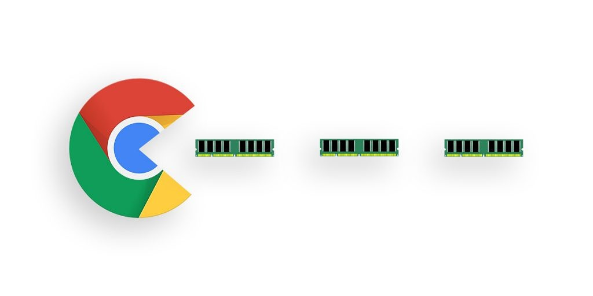

Основные характеристики для сравнения.
Совместимость — HTML5test
Проверить все браузеры на совместимость со всеми сайтами в сети практически невозможно.
Приблизительно понять, насколько браузер отвечает современным веб-стандартам, можно с
помощью ресурса HTML5test. В его тесте браузер может набрать максимум 555 баллов.
Долгое время в этом рейтинге единолично лидировал Chrome. Однако теперь практически
все альтернативные браузеры на его движке сравнялись по позициям. Отстает лишь Opera.
Firefox, как мы помним, работает на собственном движке и в тесте отстает от конкурентов
чуть более значительно:
Скорость работы — JetStream 2
64 теста в пакете бенчмарка JetStream 2 собрали в самом сообществе разработчиков движка WebKit
для стимулирования оптимизированных нововведений в нем. Он включает в себя много
JavaScript-тестов и награждает браузеры, которые «быстро запускаются, быстро исполняют
код и работают без сбоев».
Результаты этого теста стоит воспринимать с некоторой долей скепсиса в связи с тем,
кто его разрабатывал. Firefox на альтернативном движке демонстрирует в нем не самый лучший
результат и значительно отстает от конкурентов.
Оперативная память
Для оценки объема оперативной памяти, который потребляет тот или иной браузер с десятком запущенных вкладок, использовалась «Песочница» в Windows 10. Объем оперативной памяти, который «Песочница» потребляет в состоянии покоя, отнимался от объема, который она использовала с тестовым браузером. Все браузеры работали в состоянии из коробки: только-только установлены.
Таблица сравнения наиболее популярных браузеров.
| Браузеры на основе Chromium | ||||
|---|---|---|---|---|
| Иконка браузера | Название браузера | Баллы совместимости (HTML5Test) | Баллы скорости работы (JetStream 2) | Оперативная память |
| Google Chrome | 528 | 103.011 | 1500 MB | |
| Yandex Browser | 513 | 103.011 | 1500 MB | |
 |
Microsoft Edge | 492 | 103.011 | 1500 MB |
| Браузеры, построенные на других движках | ||||
| Vivaldi (Blink) | 523 | 103.011 | 1500 MB | |
| Opera (Blink) | 518 | 103.011 | 1500 MB | |
| Safari (WebKit) | 471 | 103.011 | 1500 MB | |
| Mozilla Firefox (Quantum) | 491 | 103.011 | 1500 MB | |
| Waterfox (Quantum) | 489 | 103.011 | 1500 MB | |
Важные функции при выборе браузера
Устанавливая Yandex Browser стоит быть готовым к тому, что вместо одного вы получите три ярлыка.
Один от браузера, второй — кнопка перехода на главную страницу российского поисковика, третий —
от ассистента «Алисы». От последней можно избавиться, если в процессе установки снять одну галочку.
Появление второго не предотвратишь. Остальные браузеры устанавливаются без подвоха.
Стартовое окно должно быть опрятным. У Yandex, Opera и Edge оно загрязняется различными
новостными рекомендациями, но от них можно избавиться в настройках.
В Opera, Vivaldi и Yandex есть возможность открепить окно воспроизводимого видео и зафиксировать
его поверх вкладок. У трех других браузеров по умолчанию такой фишки нет, лечится поиском и
установкой расширений.
В браузерах Yandex, Vivaldi и Opera встроены нативные блокировщики рекламы. При этом блокировка
рекламы в Yandex не работает. Протестировано на самых загаженных ресурсах наподобие TechRadar.
Для остальных браузеров блокировщики необходимо устанавливать через расширения. Они иногда сбоят
и частично пропускают рекламу. Блокировщики в Opera и Vivaldi работают лучше остальных, так как
оптимизируют вид страницы, где была вырезана реклама, для удобного чтения.
В Opera есть встроенный VPN, что облегчает доступ к заблокированным по тем или иным причинам
ресурсам. В России с 17 июня нативная поддержка VPN в Opera пропала из-за решения Роскомнадзора.
Для остальных браузеров придется использовать сторонние сервисы либо расширения.
У всех браузеров есть возможность синхронизации с мобильной версией. В большинстве случаев
это сводится к синхронизации закладок, некоторых настроек и истории посещений, информации для
автозаполнения в формы на сайтах, паролей в зашифрованном виде, открытых вкладок. Из интересного
в Opera есть функция Flow. Это своеобразное окно чата между вашими синхронизированными под одним
аккаунтом но на разных устройствах браузерами. В этот чат можно сбрасывать ссылки, изображения,
заметки или файлы.